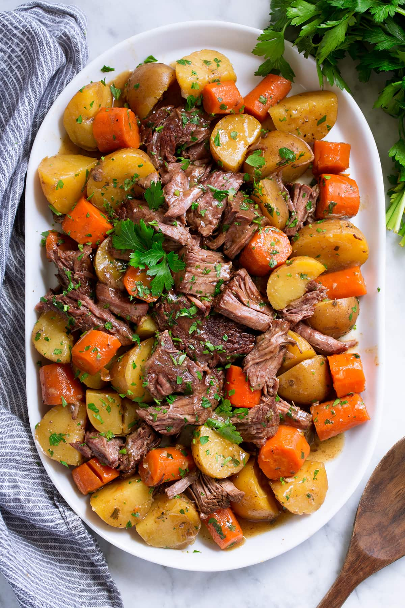

Mississippi Pot Roast

Description: yummy southern-style pot roast
Born in the bayou's of the south, this recipe is sure to satiate any appetite
for comfort food!
This savory, meaty, roast is filled with protein. I would recommend a side dish
of some sort to get your greens in.
Ingredients
- 1 (3 pound) chuck roast
- ½ (12 ounce) jar pepperoncini
- ½ (12 ounce) jar pepperoncini juice
- 1 (1 ounce) packet au jus gravy mix
- 1 (0.4 oz) package buttermilk ranch dressing (such as Hidden Valley®)
- salt and ground black pepper to taste
Steps
- Step 1: Combine chuck roast, pepperoncini, pepperoncini juice, au jus mix, buttermilk
ranch dressing, salt, and pepper in a slow cooker. Cook on Low until roast is
fork-tender, about 8 hours.
- Step 2: Pull chuck apart with 2 forks. Cover with aluminum foil to keep
warm.